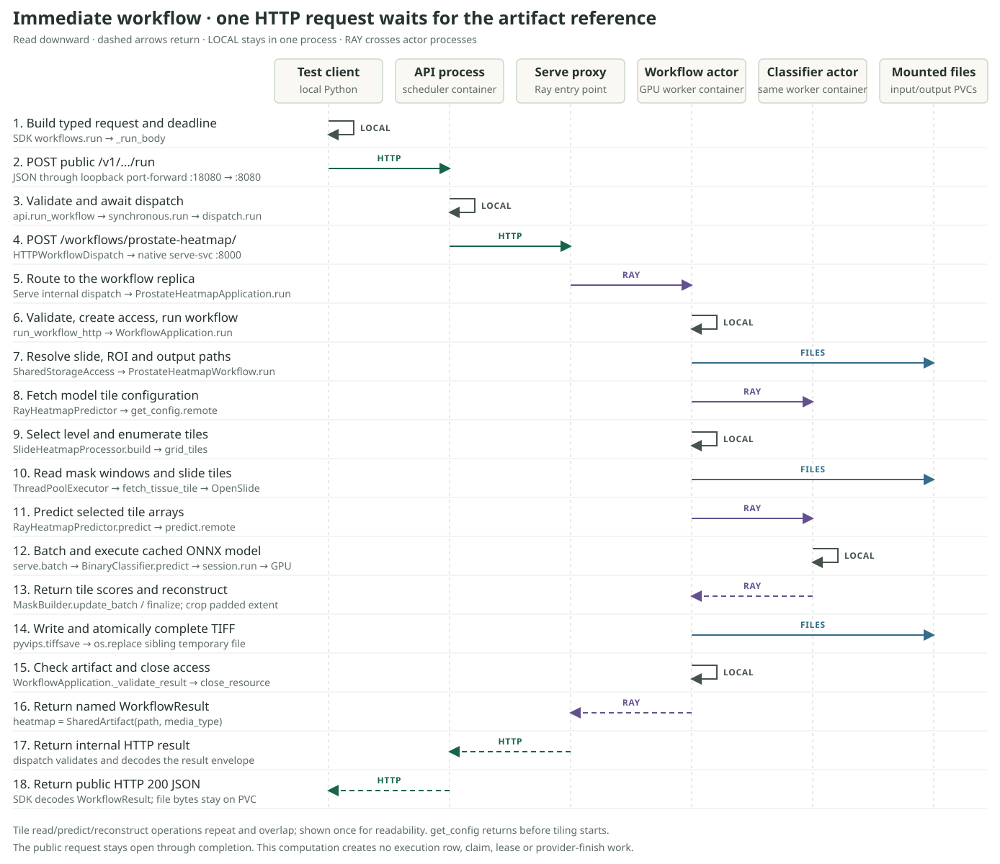
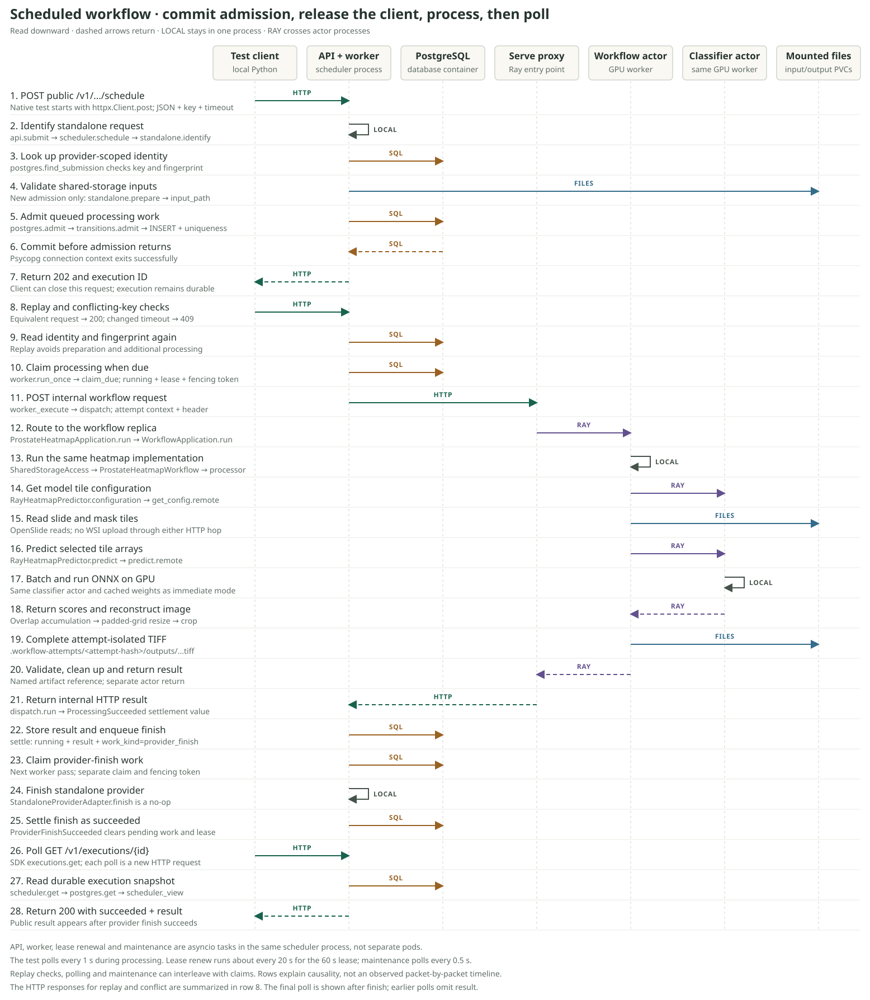

Where a schedule request becomes durable
Follow one standalone request far enough to explain replay, deadlines, and an admission race from the actual code.
The work behind the request
A pathologist examines thin, stained tissue sections. A whole-slide image, or WSI, is the large digital image used by slide-processing software. WSI formats typically support multiple resolutions and reading a region without loading the whole image. NCI tissue examination; OpenSlide overview.
The current prostate-heatmap workflow takes two named inputs, slide and region_of_interest, and produces a TIFF heatmap artifact. In its standalone path, the ROI is a mask. fetch_tissue_tile skips a tile if the corresponding mask window has no nonzero grayscale pixels. The processor calls a model for selected tiles and reconstructs the scores in slide coordinates. Input/output definition; Tile selection; Slide processing.
The scheduler surrounds this computation with durable execution state. Its schedule() method prepares and admits the invocation. Dispatch happens later in the worker. Scheduler; Worker.
Read the call path
- 1. HTTP adapter
ScheduleBody → ScheduleRequest - 2. SchedulerIdentify, look up, set deadline, prepare.
- 3. RepositoryBuild record, insert or retrieve, commit.
- 4. Public response
ExecutionView → ScheduleResult
Start with the recommended primary source, ExecutionScheduler.schedule. Keep it open beside this lesson. Then follow each row below into its source.
| Step | Implementation detail | Source to inspect |
|---|---|---|
| Translate HTTP | The route creates ScheduleRequest. submit awaits the scheduler and chooses 202 when created is true, otherwise 200. | api.py |
| Identify | Standalone requires an idempotency key. Its fingerprint is SHA-256 of canonical JSON containing workflow ID, body, and requested timeout. Sorted keys and compact separators remove JSON key-order and whitespace differences. | identify |
| Find replay | The repository looks up provider plus key and checks the fingerprint. Matching identity returns the existing view immediately. A different fingerprint raises a conflict. | find_submission; in-memory equivalent |
| Budget time | For a new submission, the scheduler computes an absolute deadline before preparation. A requested timeout must be positive and is capped at the maximum. An omitted timeout uses the configured default. | _requested_timeout |
| Prepare | Standalone parses the body into an invocation, validates configuration and named inputs, requires shared storage, and resolves shared input paths. It returns PreparedWorkflow with empty protected context. | prepare |
| Finalize deadline | A provider's earlier cap can shorten the deadline. The scheduler rejects it if already expired, replaces the invocation's deadline, and constructs Admission. | schedule; internal values |
| Admit durably | PostgreSQL encrypts protected context, gets database time, builds initial state, and inserts with uniqueness on provider plus submission key. A competing insert may make this operation return an existing record. | admit; schema |
| Project result | _view includes the result only for succeeded, and the error only for failed. Lease, work kind, protected context, and counters remain internal. | _view; public values |
Two details to explain as the author
The early lookup saves preparation on an admitted replay. It also means that replay can succeed after an input file has disappeared. The original execution is being retrieved. Read test_standalone_replay_skips_preparation_and_conflict_is_rejected, which deletes the slide before replaying the request. Scheduler tests.
The lookup and admission are separate repository operations. Two requests can both see no existing record and both prepare. PostgreSQL's ON CONFLICT (provider, submission_key) DO NOTHING makes only one insert succeed. The other request reads the winning record and checks its fingerprint. The early lookup therefore saves work; admission establishes uniqueness. Admission SQL; test_concurrent_equivalent_admission_creates_one_execution.
Find the commit. There is no explicit commit() in admit. Its return exits _connection(), whose Psycopg connection context commits on normal exit and rolls back on exceptional exit. The repository finishes that exit before returning to the scheduler. The HTTP adapter chooses its response status afterward. _connection; Psycopg transaction behavior.
The exact state admission creates
ExecutionTransitions.admit sets public status to queued, internal work kind to processing, and next_attempt_at to database time. Attempt counters start at zero. Lease owner, fencing token, lease expiry, result, and error are all absent. A worker can then claim the record.
Admission's constructed record is queued. A concurrently running worker may claim it before the caller receives the response, so later polling can already show running. Keep the returned snapshot and the independently advancing execution distinct.
Predict before rereading
Make each prediction from memory, then use the feedback to locate the branch. Every answer in a question has the same word count.
0 of 3 predictions currently correct.
Answer key for print or offline review
1. Return existing execution. 2. The admission transaction. 3. 40 seconds remain. Locate the early return, the insert conflict handling, and the deadline assignment that justify these answers.
Explain one changed case
Two callers use the same standalone key with different bodies. Both miss find_submission, and both preparations succeed. Caller A's insert wins. Explain what B does next, which layer reports the error to the caller, and whether preparation ran once or twice.
Check your reasoning after explaining it
B's insert returns no row. It selects A's execution and checks the fingerprint. The mismatch raises ScheduleConflictError. The connection context exits exceptionally; api.py's submit maps the error to HTTP 409. Both requests prepared. Only A admitted an execution. The repository translates Psycopg failures, while this domain conflict propagates to the HTTP adapter.
Send your explanation to the agent, including anything that felt uncertain. Follow-up questions can target a single statement, type, or branch. Your explanation determines whether the next lesson should follow claim_due or unpack a prerequisite.
The real test, across containers and transports
Why the scheduler runs separately explains the accepted availability tradeoff and why immediate HTTP forwarding is a separate choice.
The final standalone test ran scheduled processing, replay and conflict checks, polling, a fresh-client replay, and immediate processing of the same WSI. The diagrams below follow both computation paths. Read the full test-flow reference for container images, process placement, mounted storage, exact source functions, test results, and recovery limits.
Immediate computation

Scheduled computation

Slide bytes and TIFF bytes stay on mounted PVCs. HTTP carries invocation JSON and artifact references; Ray calls carry selected tile arrays and scores. Scheduled results use attempt-specific paths and become public after provider finish succeeds. See the container topology, shared computation, and boundary-specific limitations.